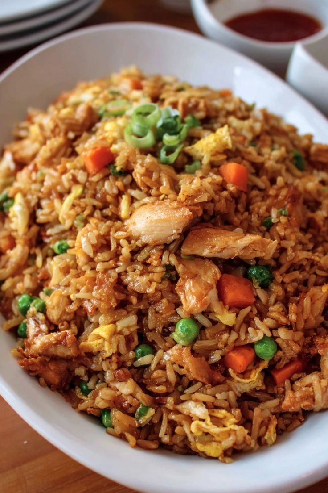

Злаки: Рис (основа всего), лапша (удон, рамен, рисовая), пшеничная мука (для лепёшек), кукуруза.
Белок: Соя и тофу, морепродукты (креветки, гребешки), рыба, курица, реже баранина, яйца.
Овощи и зелень: Бок-чой, китайская капуста, стручковая фасоль, бамбук, огурцы, грибы, чеснок, имбирь.
Приправы и соусы: Соевый соус, соус чили, кунжутное масло, карри, зира, кориандр, рыбный соус.
Фрукты: Тропические фрукты (манго, папайя, дуриан).